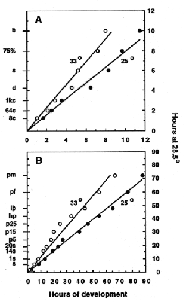

Modified from: Kimmel et al., 1955. Developmental Dynamics 203:253-310. Copyright © 1995 Wiley-Liss, Inc. Reprinted only by permission of Wiley-Liss, a subsidiary of John Wiley & Sons, Inc.
Fig. 2. Rates of development for embryos incubated at 25C (closed circles) and 33C (open circles). A: Development showing selected stages through the bud stage (occurring at 10 h at the standard temperature of 28.5C). B: Development through the end of embryogenesis, the protruding-mouth stage (occurring at 72 h at the standard temperature).
The stages (8c through b for panel A, and s through pm for panel B) are positioned along the ordinate according to when they occur at 28.5C, the standard incubation temperature. Because of this presentation, a plot of development at 28.5C would be expected to yield a straight line passing through the origin, and with a slope of 1.0. We determined this to be the case, in fact, by watching sets of control embryos developing at 28.5C during collection of the data for this experiment (not shown). Notice in the figures that developmental rates at both 25C and 33C are also approximately linear, and that the slopes of the lines at each temperature are the same in A and B. Hence developmental rate varies as a linear function of incubation temperature, and a simple calculation allows one to determine approximately when embryos developing at any temperature between the extremes will reach a desired stage of interest:
HT = h / (0.055T- 0.57)
where HT = hours of development at temperature T, and h = hours of development to reach the stage at 28.5C, as set out in Table 1. For example, computation of development to the 20-somite stage (occurring at 19 h at the standard temperature) yields 23.6 hours at 25C, and 15 hours at 33C. These times not not differ significantly from those observed (23.5 hours and 14.5 hours).
Stage abbreviations (and hours of development to reach the stage at 28.5C in parentheses). 8c: 8-cell (1.25 h), 64c: 64 cell (2 h), 1kc: 1k-cell (3 h), d: dome (4.3 h), s: shield (6 h), 75%: 75%-epiboly (8 h), b: bud (10 h), 1s: 1-somite (10.3 h) , 14s: 14-somite (16 h), 20s: 20-somite (19 h) , p5: prim-5 (24 h), p15: prim-15 (30 h), p25: prim-25 (36 h), hp: high-pec (42 h), lp: long-pec (48 h), pf: pec-fin (60 h), pm: protruding-mouth (72 h).
Method: Observations were on embryos developing from several natural spawnings, separated in each case into groups at each of the temperatures (25.0C, 28.5C, and 33.0C) + 0.2C. Each group generally included 20-30 embryos, never less than 6. They were incubated in covered 150 ml beakers, in water baths regulated so that the temperatures within the beakers themselves were as desired. We assigned a time point for a particular stage when we judged that the majority of embryos in a given group had reached that stage. We used several defining characteristics for the stage, not just the most obvious one, and discarded malformed embryos. Further, we took care to assure that embryos taken at intervals from the beakers for staging were not developing differently from control embryos kept separately without being disturbed. This is because staging, particularly at the later time points, necessarily involves some handling of the embryos that could retard development (e.g., pipetting, dechorionation, tricaine anesthesia, mounting in observation chambers), particularly if done repeatedly. In fact during these studies we observed that repeated anesthesia and rinsing (3 times over the period between 20 h and 48 h) significantly retards development: treated embryos looked 2-6 h younger than control embryos at the long-pec stage.

Figure 2